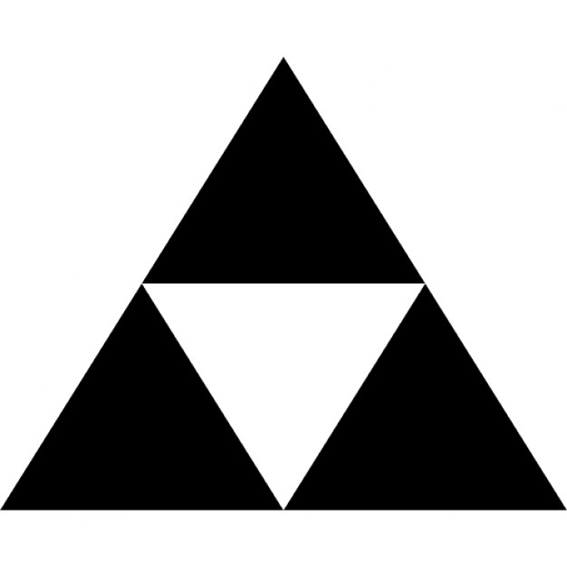

void setup() { size(400, 400); } void draw() { background(0); rect(100, 100, 200, 200); }
background(0);?ellipse(x, y, bredde, høyde);
triangle(x1, y1, x2, y2, x3, y3);
Her er x1 og y1 posisjonen til det første hjørnet

beginShape(); vertex(10, 10); // Legg til et hjørne ... // Bytt ut ... med mange vertex-kall vertex(30, 50); // Legg til siste hørne endShape(CLOSE); // CLOSE - Koble sammen første og siste hjørne
type navn = startverdi;int (kort for integer)int a = 5;
float (kort for floating point number)float pi = 3.14;
boolean (etter George Boole)true)
eller usann (false)boolean awesome = true;
char (kort for character)char c = 'c';
String (en streng med tegn)String text = "Can I haz cheezeburger?";
colorintcolor c1 = #ff8040; color c2 = color(255, 128, 64); ... // Brukes gjerne med: background(c1); fill(#4080ff); stroke(128, 255, 64);
float x = 200.0; void setup() { size(400, 400); } void draw() { background(0); ellipse(x, 200, 50, 50); }
draw kjører omtrent hvert 16. millisekundfloat x = 200; float y = 200; void setup() { size(400, 400); } void draw() { background(0); x = x + 2.5; y = y - 1.5; ellipse(x, y, 50, 50); }
background(0);?float xSpeed = 2.5; float ySpeed = 1.5; ... x = x + xSpeed; y = y + ySpeed; ...
... x = x + xSpeed; y = y + ySpeed; if (x > width - 25) { x = width - 25; xSpeed = -xSpeed; } ...
x = x + xSpeed; y = y + ySpeed; if (x > width - 25) { background(#ff0000); x = width - 25; xSpeed = -xSpeed; } else { background(0); }
if (x > width - 25) { x = width - 25; xSpeed = -xSpeed; } else if (x < 25) { x = 25; xSpeed = -xSpeed; }
void keyPressed() { if (key == 'a') { x = x - 2.5; } if (keyCode == LEFT) { x = x - 2.5; } }
boolean left; ... void keyPressed() { if (key == 'a') { left = true; } ... } void draw() { if (left) { x = x - 2.5; } ... }
keyPressedvoid keyReleased() { if (key =='a') { left = false; } ... }
keyReleased mouseXmouseYmouseClicked - KlikkmousePressed - Knapp trykket innmouseReleased - Knapp sluppet oppellipse(mouseX, mouseY, 50, 50);
fill(farge) setter fargen på det du skal tegne.setupPImage bilde; void setup() { size(400, 400); bilde = loadImage("bilde.png"); } void draw() { background(0); image(bilde, 200, 200); }
imageMode i referansenimageMode i setupclass TypeNavn { ... }
class Ball { float x; float y; }
class Ball { float x; float y; Ball(float x, float y) { this.x = x; this.y = y; } }
setup, draw er metoder du har sett førdraw-metodeclass Ball { ... void draw() { ellipsse(x, y, 50, 50); } }
Ball ball = new Ball(200, 200); ... void draw() { background(0); ball.draw(); }
0 float[] floatList = new float[100]; Ball[] balls = new Ball[10];
0 og slutter på antall - 1length er en variabel i alle slike lister
som gir oss hvor mange plasser som finnesfloatList[0] = 3.14; balls[9] = new Ball(); floatList[floatList.length - 1] = 99.9;
for (Type navn : liste)for (Ball ball : balls) { ball.draw(); }
for (int i = 0; i < floatList.length; i++) { floatList[i] += 0.1; }